|
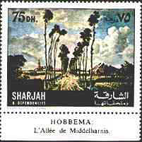 |
Landscape
of Hobbema. Victor Manta, 1999. |
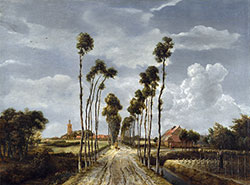 |
There are paintings that I liked immediately and afterwards stayed forever in love with them.
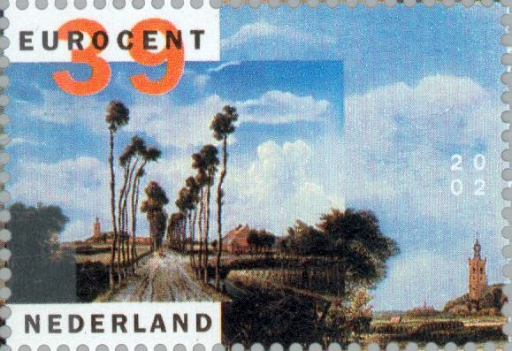
One of these masterpieces is the work of Dutch School painter Meyndert Hobemma (1638-1709), a painting named "The Avenue, Middelharnis", dated 1689.
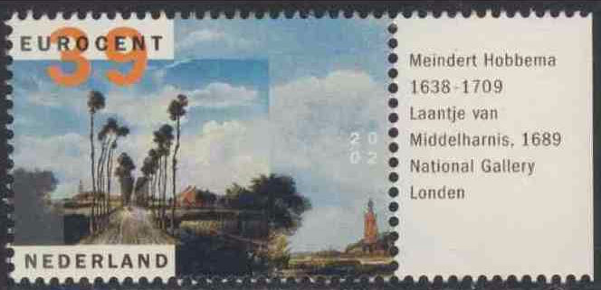
The painting shows the village and church of Middelharnis in South Holland. It is unusual for Hobemma to paint identifiable sites.
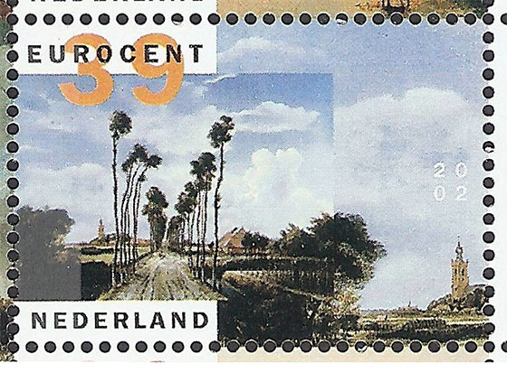
Each time I visit the National Gallery in London, I return many times from other exhibition rooms to admire again and again this wonderful masterpiece.
|
Paysage
de Hobbema. |
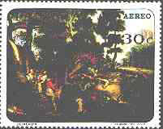 |
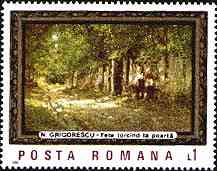 |
Peisaj de
Hobbema. |
Look below in the middle at these very tall and slender trees, bare-trunked, tufted only at the top, and the dusty track that stretches far back to the small village in the background. The atmosphere is peaceful: a man strolls with his dog, his gun resting on his shoulders; a couple pause in the lane to talk; a man is pruning his hops. There are very small glimpses of human life amidst broad expanses of field with patches of light, similar to those found in the paintings of Ruisdael. The sense of space is above created by the sky which takes up three-quarters of the picture surface. (After Dillian Gordon: 100 Great Paintings).
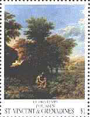 |
M. Hobbema. The Avenue,
Middelharnis. |
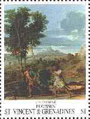 |
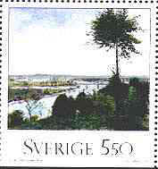 |
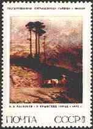 |
With his teacher, Jacob van Ruisdael, Hobbema is considered one of the two greatest Dutch landscape painters. His favourite subject matter was the wooded countryside; his scenes include villages, farmhouses, tree-shaded streams, and, especially, watermills. Hobbema's large, luminous compositions feature a masterly draughtsmanship and painstaking detail; his palette tends to be subdued.
Landschaft
von Hobbema. |
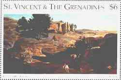 |
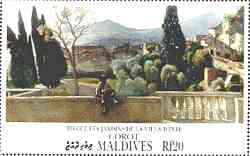 |
Peizaj
Hobbemy. |
Much of his work dates from before 1668, when he married and, with the help of his wife, received an appointment as a municipal tax official. Hobbema's work did not achieve full recognition until after his death, when his superbly organized, tranquil scenes, were appreciated as the final masterpieces of the Dutch landscape tradition in painting.
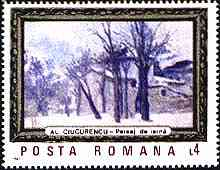 |
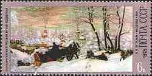 |
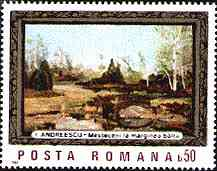 |
Notice: the poetry above is not an environmental one. It refers to the intelligent joining of nature and of the presence of man on landscapes paintings, the proved approach of great masters. Nature without men is of reduced interest, only men having the consciousness of its presence and of its beauty.
Created: 1999. Revised: July 18, 2016
. Copyright © 1999 - 2016 by Victor Manta, Switzerland. All rights reserved worldwide. |
Click the banner above to visit the site |